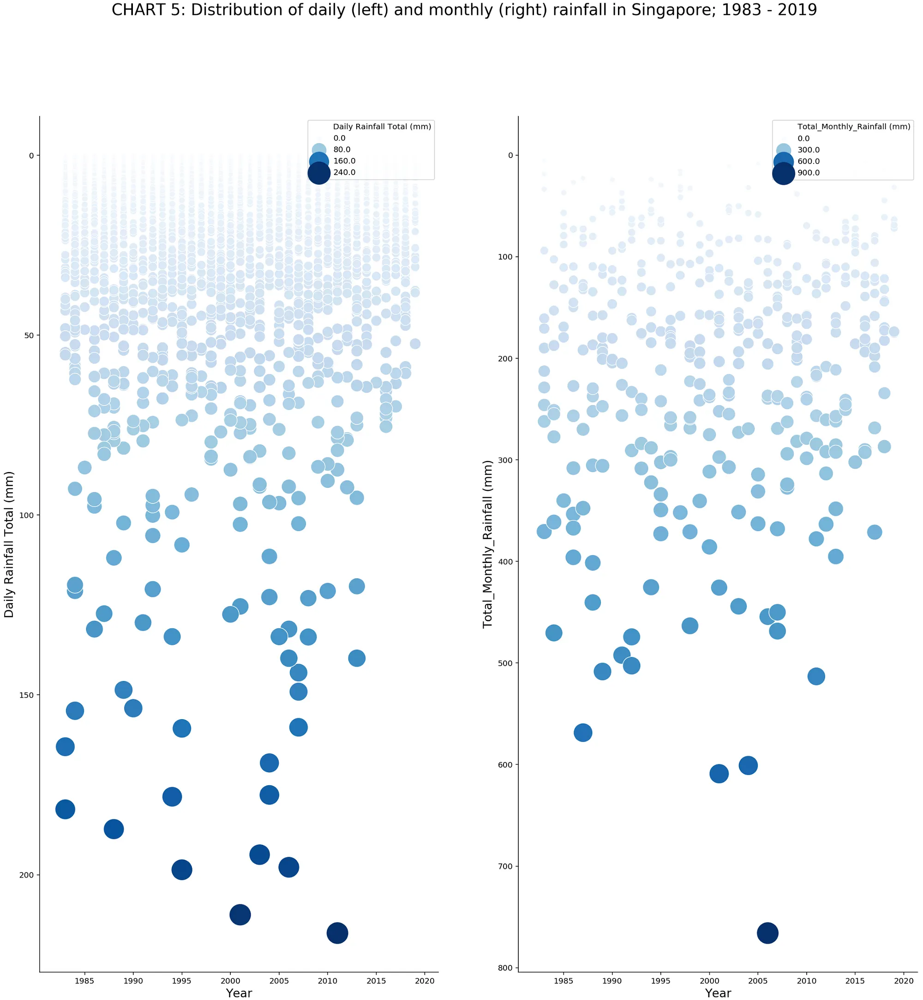
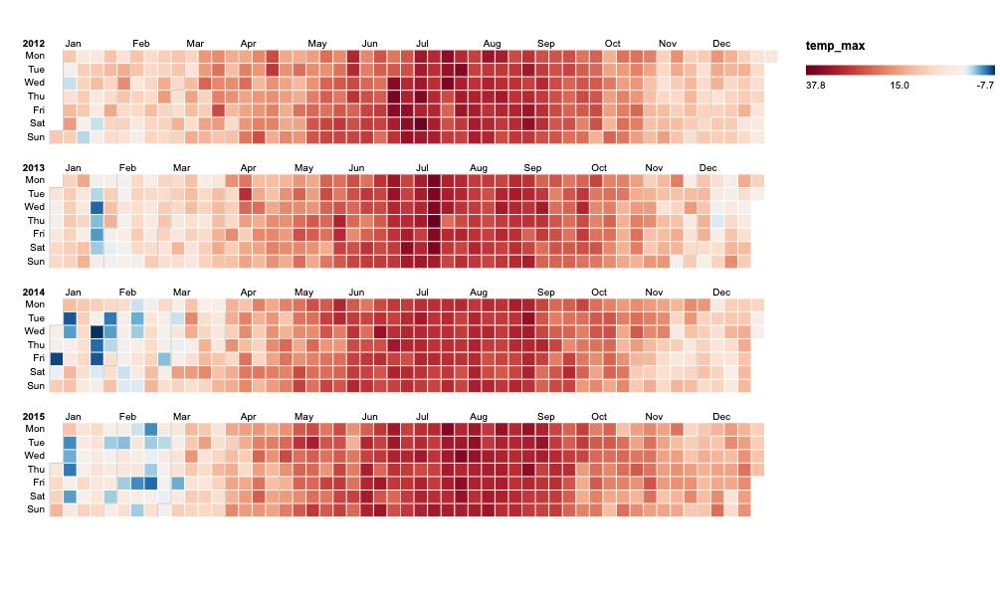

library(dplyr)
library(ggplot2)
library(lubridate)
library(janitor)
library(tibble)
library(tidyr)
library(stringr)
library(viridis)
library(patchwork)
library(scales)
library(ggrepel)
library(zoo)Exploratory Data Analysis of Rainfall Data
Introduction
Exploratory data analysis of the rainfall data from the Changi station for Week 09 mid-project check in
Data Loading and Cleaning
We scraped the online database for data from Changi station that covers 1980-2026. For the main comparison dataset, this analysis uses 1983 onward. This matches the starting year of the reference Medium visualisation, while still extending the time period beyond the original 1983-2019 range using the newer records available up to 2026, and also 1980 to 1982 has many blank data which we removed.
The 1980-1982 records are not deleted from the raw source file. Instead, they are cleaned first, checked for missingness, and then excluded from the main analysis dataset. This makes the cleaning decision reproducible in R rather than relying on manual spreadsheet edits.
# Create directories for processed data and figures
dir.create("data/processed", showWarnings = FALSE, recursive = TRUE)
dir.create("figures", showWarnings = FALSE, recursive = TRUE)
# Define a function to parse numbers from character vectors
parse_base_number <- function(x) {
cleaned <- gsub("[^0-9.\\-]+", "", as.character(x))
cleaned[cleaned == ""] <- NA_character_
suppressWarnings(as.numeric(cleaned))
}
# Find the CSV file
csv_path <- "MSS_Master_Daily_S24_1980_2026.csv"
if (!file.exists(csv_path)) {
csv_path <- file.path("data", "raw", "MSS_Master_Daily_S24_1980_2026.csv")
}
if (!file.exists(csv_path)) {
stop("Could not find MSS_Master_Daily_S24_1980_2026.csv")
}
# Read and clean the raw data
rainfall_raw <- read.csv(
csv_path,
na.strings = c("", "NA", "N/A", "-", "\u2014", "\u0097"),
fileEncoding = "UTF-8",
stringsAsFactors = FALSE,
check.names = FALSE
)
rainfall_all <- rainfall_raw |>
janitor::clean_names() |>
mutate(
across(c(year, month, day), as.integer),
date = lubridate::make_date(year = year, month = month, day = day),
across(
c(
daily_rainfall_total_mm,
highest_30_min_rainfall_mm,
highest_60_min_rainfall_mm,
highest_120_min_rainfall_mm,
mean_temperature_c,
maximum_temperature_c,
minimum_temperature_c,
mean_wind_speed_km_h,
max_wind_speed_km_h
),
parse_base_number
),
station = stringr::str_squish(station)
) |>
arrange(date)
early_year_missingness <- rainfall_all |>
filter(year >= 1980, year <= 1985) |>
group_by(year) |>
summarise(
rows = n(),
daily_rainfall_missing_percent = mean(is.na(daily_rainfall_total_mm)),
highest_30_min_missing_percent = mean(is.na(highest_30_min_rainfall_mm)),
highest_60_min_missing_percent = mean(is.na(highest_60_min_rainfall_mm)),
highest_120_min_missing_percent = mean(is.na(highest_120_min_rainfall_mm)),
temperature_fields_missing_percent = mean(
is.na(mean_temperature_c) |
is.na(maximum_temperature_c) |
is.na(minimum_temperature_c)
),
wind_fields_missing_percent = mean(
is.na(mean_wind_speed_km_h) |
is.na(max_wind_speed_km_h)
),
.groups = "drop"
)
print(early_year_missingness)# A tibble: 6 × 8
year rows daily_rainfall_missing_percent highest_30_min_missing_percent
<int> <int> <dbl> <dbl>
1 1980 366 0 1
2 1981 365 0 1
3 1982 365 0 1
4 1983 365 0 1
5 1984 366 0 1
6 1985 365 0 1
# ℹ 4 more variables: highest_60_min_missing_percent <dbl>,
# highest_120_min_missing_percent <dbl>,
# temperature_fields_missing_percent <dbl>, wind_fields_missing_percent <dbl># Main comparison dataset:
# 1980-1982 are excluded because these years contain substantial missingness in
# supporting weather/intensity fields and the reference visualisation begins in
# 1983. Daily rainfall itself is complete in these years, so this is a design
# comparability decision rather than a claim that the rainfall totals are absent.
rainfall <- rainfall_all |>
filter(year >= 1983, year <= 2026)Data Quality Checks
Here we perform some basic checks on the cleaned data to understand its integrity.
date_checks <- tibble(
check = c(
"rows",
"first_date",
"last_date",
"invalid_dates",
"duplicate_dates",
"missing_dates_inside_observed_range",
"missing_daily_rainfall_values",
"negative_daily_rainfall_values"
),
value = c(
as.character(nrow(rainfall)),
as.character(min(rainfall$date, na.rm = TRUE)),
as.character(max(rainfall$date, na.rm = TRUE)),
as.character(sum(is.na(rainfall$date))),
as.character(sum(duplicated(rainfall$date))),
as.character(length(setdiff(
seq(min(rainfall$date, na.rm = TRUE), max(rainfall$date, na.rm = TRUE), by = "day"),
rainfall$date
))),
as.character(sum(is.na(rainfall$daily_rainfall_total_mm))),
as.character(sum(rainfall$daily_rainfall_total_mm < 0, na.rm = TRUE))
)
)
print(date_checks)# A tibble: 8 × 2
check value
<chr> <chr>
1 rows 15857
2 first_date 1983-01-01
3 last_date 2026-05-31
4 invalid_dates 0
5 duplicate_dates 0
6 missing_dates_inside_observed_range 0
7 missing_daily_rainfall_values 0
8 negative_daily_rainfall_values 0 field_missingness <- rainfall |>
summarise(across(everything(), ~ sum(is.na(.x)))) |>
pivot_longer(
cols = everything(),
names_to = "column",
values_to = "missing_values"
) |>
mutate(missing_percent = missing_values / nrow(rainfall))
print(field_missingness)# A tibble: 14 × 3
column missing_values missing_percent
<chr> <int> <dbl>
1 station 0 0
2 year 0 0
3 month 0 0
4 day 0 0
5 daily_rainfall_total_mm 0 0
6 highest_30_min_rainfall_mm 11329 0.714
7 highest_60_min_rainfall_mm 11330 0.715
8 highest_120_min_rainfall_mm 11330 0.715
9 mean_temperature_c 0 0
10 maximum_temperature_c 0 0
11 minimum_temperature_c 0 0
12 mean_wind_speed_km_h 12 0.000757
13 max_wind_speed_km_h 54 0.00341
14 date 0 0 Data Aggregation
We will aggregate the daily data into monthly and yearly summaries so that we can understand the data at different resolutions
monthly_observed <- rainfall |>
mutate(month_start = floor_date(date, unit = "month")) |>
group_by(year, month, month_start) |>
summarise(
monthly_total_mm = sum(daily_rainfall_total_mm, na.rm = TRUE),
n_days_observed = n(),
n_missing_rainfall = sum(is.na(daily_rainfall_total_mm)),
expected_days = lubridate::days_in_month(first(month_start)),
.groups = "drop"
) |>
mutate(
month_status = case_when(
n_days_observed == expected_days & n_missing_rainfall == 0 ~ "complete",
TRUE ~ "partial"
)
)
all_months <- tidyr::expand_grid(
year = min(rainfall$year, na.rm = TRUE):max(rainfall$year, na.rm = TRUE),
month = 1:12
) |>
mutate(
month_start = lubridate::make_date(year, month, 1),
expected_days = lubridate::days_in_month(month_start)
)
monthly <- all_months |>
left_join(
monthly_observed,
by = c("year", "month", "month_start", "expected_days")
) |>
mutate(
month_status = case_when(
is.na(n_days_observed) ~ "unavailable",
month_status == "complete" ~ "complete",
TRUE ~ "partial"
),
month_name = factor(month.abb[month], levels = month.abb),
year_display = factor(year, levels = rev(sort(unique(year)))),
display_total_mm = if_else(month_status == "complete", monthly_total_mm, NA_real_)
)
annual <- monthly |>
group_by(year) |>
summarise(
observed_total_mm = sum(monthly_total_mm, na.rm = TRUE),
complete_months = sum(month_status == "complete"),
unavailable_months = sum(month_status == "unavailable"),
partial_months = sum(month_status == "partial"),
annual_total_mm = if_else(
complete_months == 12,
observed_total_mm,
NA_real_
),
year_status = if_else(complete_months == 12, "complete", "partial_or_unavailable"),
.groups = "drop"
)
# Displaying the first few rows of the aggregated data
print("Monthly Data Head:")[1] "Monthly Data Head:"head(monthly)# A tibble: 6 × 11
year month month_start expected_days monthly_total_mm n_days_observed
<int> <int> <date> <int> <dbl> <int>
1 1983 1 1983-01-01 31 246 31
2 1983 2 1983-02-01 28 5.6 28
3 1983 3 1983-03-01 31 18.6 31
4 1983 4 1983-04-01 30 33.6 30
5 1983 5 1983-05-01 31 33.6 31
6 1983 6 1983-06-01 30 94 30
# ℹ 5 more variables: n_missing_rainfall <int>, month_status <chr>,
# month_name <fct>, year_display <fct>, display_total_mm <dbl>print("Annual Data Head:")[1] "Annual Data Head:"head(annual)# A tibble: 6 × 7
year observed_total_mm complete_months unavailable_months partial_months
<int> <dbl> <int> <int> <int>
1 1983 1866. 12 0 0
2 1984 2687. 12 0 0
3 1985 1484. 12 0 0
4 1986 2536. 12 0 0
5 1987 2103. 12 0 0
6 1988 2599. 12 0 0
# ℹ 2 more variables: annual_total_mm <dbl>, year_status <chr>Save Processed Data
The cleaned and aggregated data are saved to CSV files. This fulfills the requirement to provide the dataset in its cleaned form.
write.csv(rainfall_all, file.path("data", "processed", "changi_daily_cleaned_full_1980_2026.csv"), row.names = FALSE, na = "")
write.csv(rainfall, file.path("data", "processed", "changi_daily_cleaned.csv"), row.names = FALSE, na = "")
write.csv(monthly, file.path("data", "processed", "changi_monthly_rainfall.csv"), row.names = FALSE, na = "")
write.csv(annual, file.path("data", "processed", "changi_annual_rainfall.csv"), row.names = FALSE, na = "")Design Brief Draft

This project redesigns Chart 5 from Visualising Singapore’s Changing Weather Patterns (1983-2019), which compares daily and monthly rainfall in Singapore. The original chart is visually memorable because it uses falling rain-like circles to highlight extreme rainfall events, but it is difficult to read due to overplotting, repeated encodings of rainfall amount, a reversed y-axis, and limited interactivity. Our redesign aims to make long-term rainfall patterns clearer by reducing visual clutter, improving comparison across years and rainfall levels, and extending the dataset from 1983 to 2026. The intended audience includes students, Singapore residents, planners, and policymakers interested in rainfall trends and extreme weather events.
Planned Design Direction
For the daily rainfall chart, we plan to replace the current visualisation with a stacked bar chart that groups each day into rainfall ranges: 0–50 mm, 50–100 mm, and 100–200 mm. Each range will be represented by a distinct colour, and the y-axis will show the frequency of days with rain within each range over the course of a year, with each bar totalling 365 days. The x-axis will represent each year, making it easy to compare how the distribution of rainfall intensity has shifted over time. If this approach becomes too granular, we will scale up to monthly aggregates instead.
For the monthly rainfall chart, each bar will represent a full year on the x-axis broken down into 12 segments one per month arranged from January to December and colour-coded accordingly. The y-axis will show total rainfall, allowing readers to see not just annual totals but also how rainfall is spread across months within each year.
Another idea we would try is a heatmap, if the idea is to integrate monthly and daily chart in one. We would use a heatmap by grouping daily rainfall into a range and color coding it. The right metric instead of temperature would be replaced with color coded rainfall ranges.

Questions
Have we simplified or summarized the data to an appropriate extent?
Does aggregating daily rainfall into ranges strike a good balance between readability and retaining meaningful information?
Does our proposed redesign preserve the original visualization’s main purpose, or does it deviate too much from it?